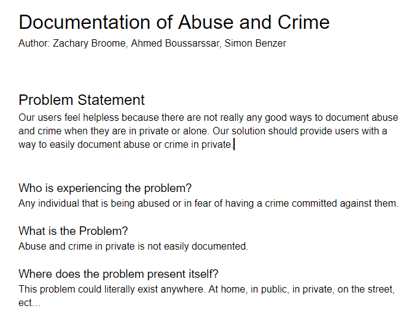
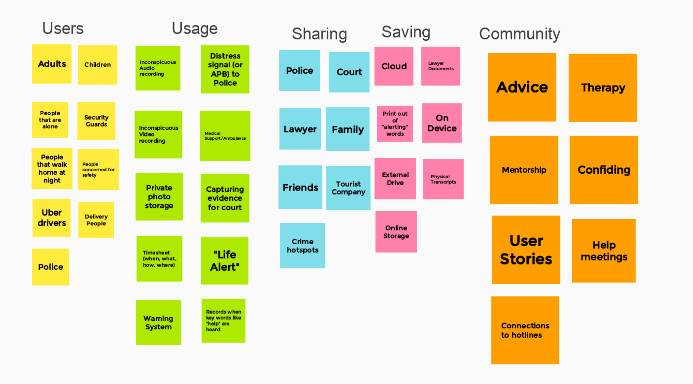

Our users are scared of rising crime rates; be it abuse, robbery, or vandalism. But people aren't only scared of the crimes, they're afraid of reporting it. If a wife is being abused, who's to say things won't escalate if the husband realizes she's trying to report him? Our users need a safe, subtle, and reliable method for reporting and documenting crimes. This it it.

My group and I planned out every aspect of our crime reporting app; what it should do, how it should do it, who it should do it for, etc.